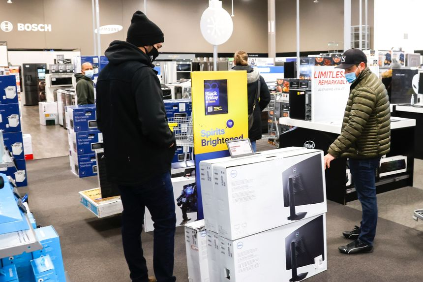
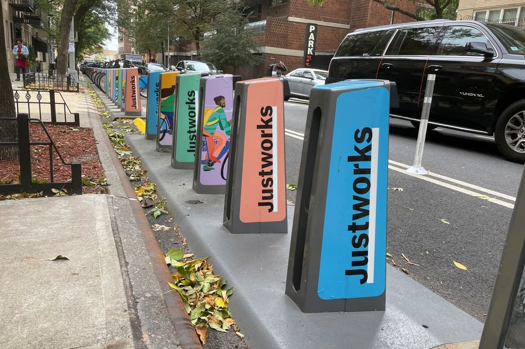
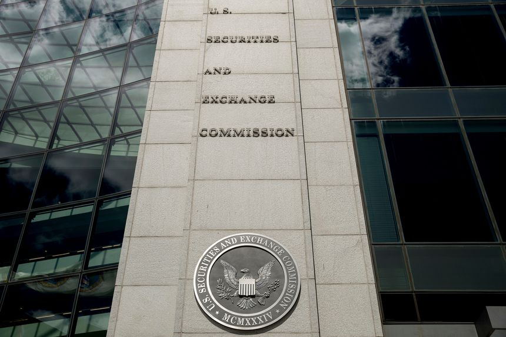
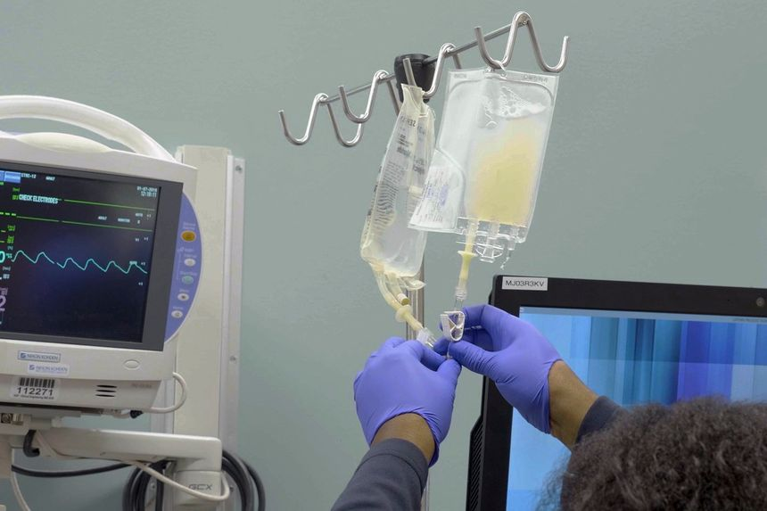
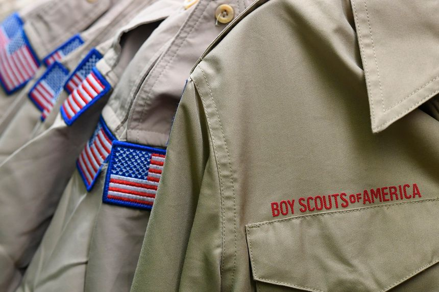

| 时间 | 分类 | 标题 | 副标题 | 正文 | 图片 |
|---|---|---|---|---|---|
| 2022-01-12 21:24:00 | World | Pegasus Spyware Deployed Against Around 35 El Salvador Journalists | Presidential spokeswoman denies involvement in illegal surveillance and says authorities are investigating use of Israeli-made tool | Around 35 journalists in El Salvador were targeted with the highly invasive Pegasus software to extract information from their cellphones as civil liberties deteriorated in the country, according to a forensic analysis conducted by research and rights groups released Wednesday. The joint investigation by six organizations including Amnesty International and Citizen Lab, a research group at the University of Toronto, found that the spyware made by the Israeli firm NSO Group for government clients was used to hack video and voice recordings, photos, contact information and phone conversations of dozens of independent journalists and editors in 2020 and 2021. |
|
| 2022-01-12 20:36:00 | CFO Journal | CFOs Kick Off the Year With More Money and More Problems | Finance chiefs, policy makers and advisers discussed a range of issues at WSJ’s CFO Network Summit | ||
| 2022-01-12 19:19:00 | Tech | PC Shipments Faced Tough Fourth Quarter, but Pandemic Supplies a Brace | Firms that track industry say households are adding personal computers, not just replacing them | Shortages and bottlenecks weighed on personal-computer shipments in the fourth quarter, but the pandemic-induced revival of the PC market is expected to continue, according to industry data. International Data Corp. and Canalys said PC shipments in the fourth quarter rose about 1%, while Gartner Inc. said world-wide PC shipments declined 5% in the December quarter, which it said was the first year-over-year decline after six straight quarters of growth. |
 |
| 2022-01-12 19:04:00 | O-I Glass Subsidiary Floats $610 Million Asbestos Bankruptcy Settlement | The settlement would pay injury claimants through a newly formed asbestos bankruptcy trust | A bankrupt subsidiary of O-I Glass Inc., one of the world’s largest makers of glass container products, has proposed a $610 million settlement to resolve costly litigation arising from manufacturing thermal insulation products that contained asbestos, a cancer-causing mineral. The proposed settlement, made public in papers filed Wednesday in the U.S. Bankruptcy Court in Wilmington, Del., would create a trust to compensate individuals who allege personal harm from the insulation products. A corporate predecessor stopped making... |
||
| 2022-01-12 18:42:00 | Opinion | The Cops Who Didn’t Come Home | Seventy-three officers were killed feloniously while on duty last year, a 20-year high. | While many Americans celebrated the holidays with their families in the final week of 2021, law enforcement kept working. Tragically, four officers didn’t make it home to their loved ones that week. They were murdered while doing their job keeping others safe. Baltimore Police Officer Keona Holley, ambushed while alone in her car, died on Christmas Eve. Five days later in Illinois, Wayne County Sheriff’s Deputy Sean Riley was killed during a call for assistance. On Dec. 30, also in Illinois, Bradley Police Department Sgt. Marlene Rittmanic was shot while attempting to locate the owner of dogs left in a car. And on New Year’s Eve, Cleveland Police Officer Shane Bartek was killed in an attempted carjacking. |
|
| 2022-01-12 18:41:00 | Opinion | Biden’s Georgia Election-Law Distortions | He says he’ll ‘defend our democracy’ from election laws that are fairer than New York’s. | President Biden went down to Georgia Tuesday to deliver an apocalyptic speech about the dangers facing our democracy. This is, he said, one of those “moments so stark that they divide all that came before and everything that followed.” The first threat to democracy was the Jan. 6 attack on the Capitol by “forces that attempted a coup.” The other threat comes from election reforms passed in 2021 by GOP state legislators who the president said want “to suppress your vote, to subvert our elections.” |
|
| 2022-01-12 18:40:00 | Opinion | Conservatives for Abusive Lawsuits | Lawmakers shouldn’t make it easier for employees to sue over vaccine mandates. | Get ready for a surge in Covid-related employment lawsuits, driven in part by conservative state lawmakers who are introducing bills to expand liability against employers that require vaccines. If these measures pass, employers will face a sued-if-you-do, sued-if-you-don’t situation. The Occupational Safety and Health Administration requires large businesses to mandate employee vaccinations and imposes hefty fines for failure to comply. Even if the Supreme Court strikes down the OSHA rule, employers are at risk for liability claims, particularly when employees work in high-risk environments, unless they adopt adequate safety measures. |
|
| 2022-01-12 18:38:00 | Opinion | How Many Hats Does It Take to Restart a Tennis Match? | About three—that’s the number of caps Reilly Opelka had to try on after an avian accident made his first unwearable. | Anyone who thinks that the big story of the Australian Open is top world tennis player Novak Djokovic almost getting expelled for not being vaccinated is missing the real headline. The true scoop down under is the saga of American tennis star Reilly Opelka vs. the Bird. Before I go further, etiquette bids me disclose that I happen to be the uncle of Mr. Opelka. But I’d probably be writing about this story even were I not related to the protagonist. |
|
| 2022-01-12 18:36:00 | Opinion | What Inflation Costs Workers | The Biden-Powell price increases reduced real wages by 2.4% in 2021. | American workers can be grateful for small favors. They finally received a raise in December, even if it was only 0.1% after inflation. At least that beats the decline of 2.4% in real wages over the entire year. That’s how much inflation has eroded the American standard of living and how it turned 2021 into a lost year for the average worker. The Labor Department said Wednesday that the consumer-price index rose 0.5% in December, or 7% in the last year. That’s the highest annual rate since 1982, when Paul Volcker was trying to wring inflation out of the economy with Ronald Reagan’s political support. The current inflation has caught the Federal Reserve and Biden Administration entirely by surprise, and they’re still not sure what to do about it other than to blame someone else. |
|
| 2022-01-12 18:32:00 | Opinion | Biden’s Operation Snail Speed on Covid Therapies | Less than 1% of $1.9 trillion in last March’s relief cash went for treatments. | The Biden Administration on Tuesday ordered another 600,000 doses of GlaxoSmithKline and Vir Biotechnology ’s monoclonal antibody. Last week it increased its order of Pfizer ’s antiviral Paxlovid by 10 million. Great, but these treatments will probably arrive after the Omicron Covid variant crests. Why didn’t it order more treatments sooner? That’s an especially good question given that the stated purpose of Democrats’ $1.9 trillion spending bill last March was Covid relief. Yet less than 1% of the spending was allocated for therapies. About as much money was given last year to New York’s financially ailing transit system as the Administration spent procuring Covid therapies. The result: A persistent treatment shortage and countless preventable deaths. |
|
| 2022-01-12 18:28:00 | U.S. Economy | Government Losses on Student Debt Climb Above $100 Billion Amid Pause on Payments | Congressional Republicans ask for details on costs amid moratorium on loan repayments | The pause in student-debt repayment has cost the federal government more than $100 billion since the start of the pandemic and could cost $4 billion to $5 billion a month until the moratorium is lifted at the beginning of May, according to government estimates. With costs mounting, congressional Republicans, led by Rep. Virginia Foxx and Sen. Richard Burr, both of North Carolina, asked the Education Department on Wednesday to release documents related to how the government calculates projected losses from students defaulting on their loans. |
|
| 2022-01-12 18:28:00 | Opinion | Saved by a Pig’s Heart | And by the creativity and innovation of U.S. medical care. | ‘A shot in the dark” is the way 57-year-old David Bennett, near death, recently described an experimental heart transplant from a genetically modified pig. On Monday his doctors announced the ground-breaking procedure appeared to have been successful. Here is another incredible tale of American daring and innovation. Mr. Bennett suffered a life-threatening cardiac condition but was deemed too sick to receive a human heart transplant. For more than a month he had been kept alive at the hospital on a breathing machine, but he was almost certain to die from heart failure. University of Maryland Medical System cardiac surgeon Bartley Griffith proposed transplanting a genetically modified pig heart. |
|
| 2022-01-12 18:26:00 | IPOs | TPG Prices IPO at $29.50 a Share | Private-equity firm will start trading Thursday under the ticker TPG | Private-equity firm TPG Inc. priced its initial public offering at $29.50 a share, people familiar with the matter said, in the first big test of the IPO market in the new year. The pricing is at the midpoint of TPG’s projected range for the offering of $28 to $31 apiece. The stock will start trading Thursday on the Nasdaq Stock Market under the ticker TPG. |
|
| 2022-01-12 18:19:00 | CFO Journal | Robinhood CFO Doesn’t Plan to Put ‘Meaningful Amount’ of Cash Into Crypto Assets | ‘It’s not lost on us that our customers…would like to see us add more coins,’ Jason Warnick told finance chiefs at the WSJ CFO Network Summit | ||
| 2022-01-12 18:09:00 | Opinion | The Case for Grayscale Mode | If you’re addicted to your smartphone, it’s probably because the colors are too vivid. | After nearly two years of lockdowns, remote working and learning, and general phone-scrolling boredom, many made a New Year’s resolution to spend less time on their smartphones in 2022. Studies show that Americans spend an average of about four hours on their phones each day. That’s 60 days a year—one-fourth of a life awake. That should provoke at least a bit of existential terror. The iPhone’s Screen Time app helps users at least feel guilty about the wasted time, but there’s an easy trick to make a smartphone impeccably dull. |
|
| 2022-01-12 18:08:00 | Books & Arts | ‘The Lords of Easy Money’ Review: An Inflated Sense of Ability | The Federal Reserve’s faith in monetary policy shows how startlingly little it understands about its disconnection from Main Street. | You don’t ordinarily turn to a book about the Federal Reserve for comedy, and for the most part Christopher Leonard’s “The Lords of Easy Money: How the Federal Reserve Broke the American Economy” stays true to its genre. Mr. Leonard does, however, include one pointedly humorous moment that sheds light on so much of his subject matter. The joke comes when he recounts an exchange among policy makers during a 2012 meeting of the Federal Open Market Committee (FOMC). The committee was in the throes of a monthslong argument about whether and how to expand the Fed’s easy-money policies. Richard Fisher, president of the Dallas Fed, chimed in with a warning. Texas Instruments, a major employer in his district, wasn’t treating existing Fed policies such as near-zero interest rates as a spur to investment and job creation. The company was merely reconfiguring its balance sheet toward cheaper debt financing and away from equity funding. This ran counter to the Fed’s theories about how its decisions filter through to the Main Street economy. To which Chairman Ben Bernanke replied: “President Fisher . . . I do want to urge you not to overweight the macroeconomic opinions of private-sector people who are not trained in economics.” |
|
| 2022-01-12 18:02:00 | Politics | Chuck Schumer Lays Out Plan for Votes on Elections Bills | Democratic Party is making big push on voting-rights agenda but lacks needed GOP support for passage | WASHINGTON—Senate Majority Leader Chuck Schumer (D., N.Y.) laid out a legislative maneuver that allows the Senate to begin debate on Democrats’ elections legislation this week, even as a path to final passage remains elusive. His plan, outlined in a memo to colleagues, doesn’t sidestep the main hurdles to passage of the bills, which would still remain subject to the 60-vote filibuster threshold for most legislation in the 50-50 Senate. But it does advance the bills to floor debate, a preliminary step that had been repeatedly blocked last year because of strong Republican opposition. |
|
| 2022-01-12 17:14:00 | Economy | Economists React: Inflation Expected to Cool This Year | Today’s high inflation rate looks different than the inflationary episodes of the 1970s and 1980s | The U.S. inflation report for December showed prices accelerating at the fastest pace in almost 40 years. But history isn’t much of a guide in this case, economists say, because today’s inflation is caused primarily by factors related to the Covid-19 pandemic and should fade in the coming months. The past few months of price increases come from both a surge in consumer demand following the Biden administration’s economic stimulus programs and supply shortages caused by a logjam at factories and U.S. ports. |
|
| 2022-01-12 17:10:00 | Opinion | America Takes a Real Pay Cut | Wages are rising, but not nearly as fast as inflation. | Washington’s debasement of the U.S. currency has resulted in a real annual pay cut for U.S. workers, even in a historically tight job market. This column has lately been noting the vast numbers of companies lifting compensation, but sharply rising wages haven’t been nearly enough to keep up with inflation, meaning a loss of purchasing power for people across the economy. The Journal’s Gwynn Guilford notes: |
|
| 2022-01-12 16:59:00 | Politics | Tensions Rise Between Fauci, GOP Over Covid-19 Pandemic Response | Anthony Fauci’s clash with Republican senators this week was the latest sign of discord between the GOP and Biden’s top medical adviser | WASHINGTON—Anthony Fauci, one of the Biden administration’s lead pandemic messengers, is facing mounting attacks from Republicans, who have questioned the longtime infectious disease expert’s credibility at a time when the public is seeking accurate information about surging coronavirus cases. The long-simmering campaign against Dr. Fauci boiled over this week during a congressional hearing, when Sens. Rand Paul (R., Ky.) and Roger Marshall (R., Kan.) launched pointed attacks on him, prompting verbal sparring that made headlines around the country. |
|
| 2022-01-12 16:30:00 | Life & Work | This Warm Winter Salad Recipe Makes a Simple, Satisfying Meal | The combination of roasted and raw carrots is sensational. Tie it together with toasted pistachios, a scattering of greens and an aromatic cumin-seed dressing. | FARM-TO-TABLE COOKING and outstanding produce are what customers expect at Anne Quatrano’s Atlanta restaurants, no matter the season. “We grow carrots in the winter, and they’re really perfect,” said the chef of her farm 45 miles outside the city. Ms. Quatrano’s final Slow Food Fast recipe, a layered and satisfying salad, showcases the vegetable two ways, roasted and raw. Tossed in oil and roasted until caramelized and yielding, the cooked carrots provide a meaty backbone to this vegetarian dish. Ms. Quatrano shaves a few more carrots paper-thin and plunges them into cold water to crisp and curl into a snappy garnish. Toppings of toasted pistachios and golden raisins plumped in white wine lend texture as well as contrasting flavors. And the aromatic cumin-seed dressing ties the dish together, providing an invigorating antidote to the deepest winter doldrums. |
|
| 2022-01-12 16:27:00 | Economy | Fed Beige Book: Economy Grew at Modest Pace to Close 2021 | Supply-chain constraints and labor shortages continued to hamper growth, while some companies reported an easing of price increases | The U.S. economy grew at a modest pace in the closing weeks of 2021 as ongoing supply-chain issues and a shortage of available workers held back production, the Federal Reserve said Wednesday. But demand remained strong and consumer spending grew, ahead of a rise in Covid-19 cases caused by the Omicron variant, the Fed said in its periodic collection of business anecdotes from around the country known as the Beige Book. |
|
| 2022-01-12 16:27:00 | Markets | Treasury Yields Decline After Inflation Data | Yields fell after the consumer-price index rose 7% in 2021 from a year earlier | U.S. government bond yields fell after data showed U.S. inflation ended 2021 at multidecade highs. The yield on the benchmark 10-year Treasury note finished Wednesday’s session at 1.724%, according to Tradeweb, down from 1.745% at Tuesday’s close. |
|
| 2022-01-12 16:18:00 | Politics | Jan. 6 Committee Seeks Information From House GOP Leader Kevin McCarthy | Voluntary request focuses on McCarthy’s conversations with former President Trump on day of Capitol riot | WASHINGTON—The select committee investigating the Jan. 6 attack on the U.S. Capitol has asked House GOP Leader Kevin McCarthy to cooperate voluntarily with their probe, seeking information about his conversations with former President Donald Trump before, during and after the riot. In a letter to Mr. McCarthy dated Wednesday, the committee’s chairman, Rep. Bennie Thompson (D., Miss.), acknowledged the sensitivity of such a request to the top-ranking House Republican, saying the committee has tremendous respect for the prerogatives of Congress and members’ privacy. “At the same time, we have a solemn responsibility to investigate fully the facts and circumstances of these events,” he said. |
|
| 2022-01-12 15:59:00 | Politics | Why Biden, Democrats Push Voting Bills Against Odds | Democratic leaders believe voters want to see them fight to pass election laws—even if they fail | WASHINGTON—President Biden’s speech in Georgia Tuesday didn’t appear to change the political reality back in Washington that long-stalled elections bills don’t have enough support to pass in the Senate. So why are Mr. Biden and his allies in Congress spending so much time pressing for the legislation? |
|
| 2022-01-12 15:52:00 | U.S. | Texas Man Charged Under New Anti-Doping Law for Allegedly Providing Drugs to Tokyo Olympic Athletes | Charges are first under the Rodchenkov Anti-Doping Act, which became law in December 2020 | In the first test of a new anti-doping law, an El Paso, Texas, man was charged in a scheme to provide banned performance-enhancing drugs to athletes in the run-up to the Olympic Games in Tokyo, according to a criminal complaint unsealed in federal court Wednesday. Eric Lira faces two criminal counts for international sports doping and for a conspiracy to misbrand drugs, the complaint says. He was taken into custody in Texas on Wednesday, according to the U.S. attorney’s office in Manhattan, which brought the charges. |
|
| 2022-01-12 15:52:00 | Politics | Biden’s Infrastructure Czar Says Fixing New Orleans Prepared Him for Job Ahead | Critics say former New Orleans mayor Landrieu moved too slowly in spending federal funds to fix drainage system | Mitch Landrieu had been mayor of New Orleans for more than seven years when torrential rains in August 2017 exposed a failing drainage system, triggering floods that evoked memories of Hurricane Katrina a dozen years earlier. Mr. Landrieu helped revive a city that was nearly bankrupt and reeling from corruption probes when he took office in 2010. Still, he spent his final months as mayor explaining why the New Orleans infrastructure was failing, even after he’d secured billions of dollars in federal aid for post-Katrina repairs. |
|
| 2022-01-12 15:36:00 | Media & Marketing | Washington Post Reprimands Business Editor Over Tweet Criticizing Column About NFL’s Ben Roethlisberger | Business editor Lori Montgomery received verbal warning for tweeting about an article that addressed allegations of sexual assault against the quarterback | Washington Post Executive Editor Sally Buzbee told employees that a top editor has been reprimanded over a tweet in which she criticized an SF Gate column that condemned football player Ben Roethlisberger, according to a company spokeswoman. Lori Montgomery, who is the Post’s business editor, tweeted last week that the column, which referenced allegations that Mr. Roethlisberger had raped women and exhibited bad behavior, was “easily disproven” and “completely FoS.” |
|
| 2022-01-12 15:32:00 | Markets | Software Platform Justworks Cites Market Conditions in Postponing IPO | The business software maker was expected to price its public offering on Wednesday night ahead of a Thursday debut | Business software maker Justworks Inc. postponed its initial public offering Wednesday, a day before its planned Nasdaq debut, as newcomers and tech stocks recently have faced a bumpy reception from investors. “Justworks has decided to delay its IPO due to market conditions at this time,” the company said in an email. |
 |
| 2022-01-12 15:31:00 | Opinion | Aretha Franklin’s Miracle of a Concert | Fifty years ago this week, the Queen of Soul recorded her ‘Amazing Grace’ album during a performance at a Missionary Baptist church in Los Angeles. | ||
| 2022-01-12 15:30:00 | Books & Arts | ‘Dürer’s Journeys: Travels of a Renaissance Artist’ Review: Capturing a Pivotal Era in Ink and Paint | An exhibition at London’s National Gallery traces the artist’s revealing and self-revealing journeys across Europe. | London It may seem unlikely, but liberal democracy and the free, modern individual are accidental byproducts of the religious control and spiritual discipline of the Reformation in northern Europe. The German printmaker and painter Albrecht Dürer (1471-1528) exemplifies both the culture that produced the Reformation—the proto-capitalist artisanal workshops of the German cities, and a bookish but furious spiritual discontent—and the culture that the Reformation produced: the puritan Protestant International, the artist as celebrity, and, ultimately, the ennui of Hamlet. |
|
| 2022-01-12 15:28:00 | Business | NFL Ratings Rose 10% in 2021 Season, Notching Best Results in Six Years | Close games helped drive the viewership increase, as the league managed its Covid-19 disruptions | Television and digital ratings for the National Football League’s regular-season games jumped 10% compared with last season and were the league’s best numbers since 2015, according to Nielsen data. The average audience for regular-season games was 17.1 million viewers, compared with 15.6 million in the 2020 regular season. Last season was marred by the Covid-19 pandemic, leading to empty stadiums and many rescheduled games as players contracted the coronavirus. In addition, coverage of the 2020 presidential election led to strong ratings competition from cable-news networks. |
|
| 2022-01-12 15:26:00 | Tech | M. Night Shyamalan on Imposter Syndrome and His Old-School Film Techniques | Ahead of the third season premiere of Apple TV+’s ‘Servant,’ showrunner Mr. Shyamalan told us about his habit of drawing each frame of his movies by hand and why he reads Stephen King novels (not because they’re scary). | THE RISE OF streaming has ushered in an era of overlong films and series that should have been movies. But M. Night Shyamalan—who gained notoriety for blockbusters like 1999’s “The Sixth Sense” and 2002’s “Signs”—is currently writing the shortest film script of his career. He’s also producing something of a modern-day unicorn: a half-hour TV drama. “At my core, I am a minimalist,” said the filmmaker. “When you put limitations on what you’re working on, that’s when you find your voice and your beauty.” The third season of that unicorn, the Apple TV+ thriller “Servant,” for which Mr. Shyamalan serves as showrunner, executive producer and sometimes director, drops January 21. Its premise—a grieving couple hires a nanny to help care for the doll that has replaced their dead child—could easily sustain one-hour episodes. But delivering the story in 30-minute bites, Mr. Shyamalan said, allows him to focus on the few themes that ground each episode. Similarly, in writing a tight script for his next feature, “Knock at the Cabin,” he’s learned that every line and every moment has to earn its place in the film. |
|
| 2022-01-12 15:17:00 | Economy | Is Inflation a Microeconomic Problem? That’s What Biden’s Competition Push Is Betting | Efforts to boost economy’s supply side such as in meat and shipping might underplay bigger forces, such as excess demand | There’s a saying on Wall Street that the stock market is also a market of stocks: an aggregation of many components often moving to their own beat. Similarly, the consumer-price index is also an index of prices. Inflation is both the result of total spending running ahead of the economy’s capacity to supply goods and services (macroeconomics), and idiosyncratic behavior in one industry or another (microeconomics). |
|
| 2022-01-12 15:13:00 | CFO Journal | Transcript: Cleveland Fed President Loretta Mester at WSJ CFO Network Summit | |||
| 2022-01-12 15:03:00 | Economy | Fed's Bullard: Four Interest Rate Rises in 2022 Now Appear Likely | Federal Reserve Bank of St. Louis President James Bullard says March rate rise is very likely amid high inflation | Federal Reserve Bank of St. Louis President James Bullard said the U.S. central bank will need to move more aggressively on rate rises this year as it seeks to stem an inflation surge, amid a job market that could see the unemployment rate fall below 3% by the end of the year. “We want to bring inflation under control in a way that does not disrupt the real economy, but we are also firm in our desire to get inflation to return to 2% over the medium term,” Mr. Bullard said in a Wall Street Journal interview Wednesday. |
|
| 2022-01-12 14:58:00 | Logistics Report | Cummins Names New Head of Global Supply Chain | Engine maker promotes Bonnie Fetch as shortages limit heavy-duty truck production | ||
| 2022-01-12 14:46:00 | Life & Work | Wordle, the Viral Word Game: What Is It, How Do You Play and Tricks to Impress Your Friends | Everything you need to know about the online game that has taken the internet by storm | Wordle, an online word game, seems like it’s everywhere these days. Here’s what you need to know. It’s a once-a-day word game that has gone viral in the last few weeks. It can only be played on a website. |
|
| 2022-01-12 14:35:00 | Risk & Compliance Journal | Proposed Framework Seeks to Better Define Liability for Chief Compliance Officers | A new framework proposed by the National Society of Compliance Professionals says regulators should seek to better understand how a company’s compliance function fits within the larger entity’s governance structure |  | |
| 2022-01-12 14:20:00 | Economy | Federal Budget Deficit Narrowed in December | Monthly gap shrank versus prior year, reflecting increase in tax collections, other revenue | The federal government ran a $21 billion deficit during December, the smallest monthly gap in two years, as the government took in more tax revenue while spending edged higher. Government receipts for the month rose by 41% from a year earlier to $487 billion, not adjusting for calendar differences, the Treasury Department said Wednesday. The Treasury said federal outlays in December rose by 4% to $508 billion. |
|
| 2022-01-12 14:14:00 | World | Russia, NATO Fail to Resolve Differences in Ukraine Talks | First discussions between alliance and Moscow since 2019 were held amid pessimism about a quick resolution | BRUSSELS—NATO’s chief said significant differences remained with Russia but expressed hope that Moscow would agree to further talks, after the first joint council meeting between the two since 2019. NATO Secretary-General Jens Stoltenberg said after discussions Wednesday that differences would be hard to bridge, with Russia increasing pressure on the West to accept its demands for sweeping security guarantees, and the alliance largely refusing to budge. |
|
| 2022-01-12 14:05:00 | CMO Today | Dawn Dish Soap Upends Packaging for a Better End-of-Bottle Experience | Five years in the making, the bottle aligns with P&G’s self-proclaimed ‘superior’ packaging strategy | ||
| 2022-01-12 14:04:00 | Politics | Biden Administration Backs Russian Sanctions Bill Contingent on Ukraine Invasion | Democratic proposal is alternative to plan by GOP Sen. Ted Cruz to mandate sanctions on Nord Stream 2 pipeline | WASHINGTON—The Biden administration has thrown its support behind a bill that would impose mandatory sanctions against Russian leaders, banks and businesses if Moscow escalates hostilities or further invades Ukraine. The endorsement comes as the White House lobbies wavering Democratic senators against another sanctions bill expected to get a Senate vote this week that is sponsored by Sen. Ted Cruz (R., Texas). The Cruz bill would initiate sanctions against Nord Stream 2, a pipeline built to deliver Russian natural gas to Germany. |
|
| 2022-01-12 13:43:00 | World | Boris Johnson Apologizes for Party at Downing Street During U.K. Lockdown | In remarks to Parliament, the British prime minister addresses an incident that has stirred popular anger | LONDON—British Prime Minister Boris Johnson apologized for attending a drinks party held in the Downing Street garden when strict lockdown measures were in place in 2020, seeking to tamp down growing public outcry and respond to pressure from his own lawmakers over the event. During a boisterous session in Parliament on Wednesday, Mr. Johnson said he regretted joining a party in Downing Street billed as a “bring your own booze” party. He explained that he thought the gathering was a work event. “I know the rage they feel with me, with the government I lead,” Mr. Johnson said. |
|
| 2022-01-12 13:29:00 | Economy | Why 7% Inflation Today Is Far Different Than in 1982 | Economic problems in the early ’80s bear little similarity to current challenges | Consumer price inflation in December, at 7%, was last this high in the summer of 1982. That’s about all the two periods have in common. Today, the inflation rate is on the rise. Back then, it was falling. It had peaked at 14.8% in 1980, while Jimmy Carter was still president and the Iranian revolution had pushed up oil prices. Core inflation that year reached 13.6%. |
|
| 2022-01-12 13:26:00 | Opinion | The Democrats’ Inflation Blame Game | Everyone and everything is responsible except the government spending that’s actually fueling it. | Despite Wednesday’s inflation report indicating that consumer prices have risen by 7% over the past 12 months and accelerated to 9.1% over the past three months, the president and Democrats other than Sen. Joe Manchin remain firmly entrenched in a state of denial. In their telling, this inflation has nothing to do with their spending policy. This is the same argument we heard in the mid-1970s. When we both began our careers in public service, the U.S. was suffering from the high inflation of the late 1970s. The federal government had squandered a decade in denying that its policies had anything to do with inflation. Politicians made convenient scapegoats out of big oil, big banks, big communications and even big grocers. Government made the problem worse with price controls, investigations into price fixing and antitrust actions. It embarrassed itself with WIN (Whip Inflation Now) buttons and Inflation Gardens. Mounting voter outrage finally ended the charade. |
|
| 2022-01-12 13:25:00 | Opinion | Putin Is Running Rings Around the West | While U.S. and European leaders natter about soft power, Russia’s president is making power moves. | Nobody knows whether Vladimir Putin will invade Ukraine, but it is increasingly clear that a divided and confused Western alliance doesn’t know how to deal with the challenge he poses. Lost in a narcissistic fog of grandiose pomposity, Western diplomats spent the past decade dismissing the Russian president as the knuckle-dragging relic of a discarded past. As then-Secretary of State John Kerry sniffed during Mr. Putin’s 2014 invasion of Ukraine, “You just don’t in the 21st century behave in 19th century fashion by invading another country on a completely trumped up pretext.” |
|
| 2022-01-12 13:15:00 | Markets | Robinhood Tells Employees They Can Work From Home Permanently | Retail-trading platform wants to become ‘a remote first company’ as many employers reconsider when they should return to the office | Most employees of retail-trading platform Robinhood Markets Inc . will be working remotely on a permanent basis amid a spike in Covid-19 cases that has many companies rethinking their return to the office. Using a primarily remote workforce will help Robinhood tap top talent across the U.S. regardless of where they live, the company said in a blog post Wednesday, describing itself as “a remote first company.” The Menlo Park, Calif.-based company said most employees will no longer be required to make regular trips to the office, while some teams will meet in-person occasionally. |
|
| 2022-01-12 13:12:00 | Life & Work | The Future of Travel Is Still Murky. Can the Oracle of Delphi Shed Light? | Once considered the center of the world, the Greek town of Delphi now attracts more day-trippers than pilgrims. But one pandemic-weary traveler hopes those old stones still have the power to shed light on the future. | THE BEAUTY OF travel has always been its unpredictability but, in the Covid era, unpredictable has taken on new meaning. In November 2021, finding myself able to travel again and desperate to escape the sensory deprivation tank that has been Covid living, I chose my first destination: the small town of Delphi, perched on the side of Mount Parnassus in central Greece. I went to that shrine of knowledge and prediction because, if the past two years have shown us anything, it’s that we really have no idea what the future holds. I needed to see something, anything, that I hadn’t seen before. I also wanted to understand how the ancients had dealt with their crises of doubt and anxiety and the basic human inability to see what’s coming. Delphi is where the uncertain have always gone to ease their uncertainty, a place of pilgrimage since before recorded history. One of the first travel writers, Pausanias, described it extensively in his tourist guide to the ancient world, around 1,800 years ago. Scholars consider the roughly 100-mile-long walk from Athens to Delphi’s Temple of Apollo among the oldest continuously used footpaths in the world. It’s one of the first trips people took with the goal of trying to figure things out. |
|
| 2022-01-12 12:09:00 | CFO Journal | Fed’s Mester Says Economy on Track for a March Rate Rise | High inflation makes it ‘very compelling’ for the central bank to raise interest rates, Cleveland Fed leader says | ||
| 2022-01-12 12:06:00 | Opinion | Boomers and Millennials Return to the Fray | Our parents gave us participation trophies; we didn’t ask for them. | F.H. Buckley tells millennials that we are soft and easily offended (“Millennials Are the Silencing Generation” (op-ed, Jan. 3). While a few younger millennials require safe spaces and promote cancel culture, who are the college administrators creating these safe spaces and the business leaders placating the cancel mobs? Boomers. Shouldn’t they know better? Our parents gave us participation trophies; we didn’t ask for them. Mr. Buckley claims correctly that “Saturday Night Live” is no longer funny, but isn’t Lorne Michaels still in control? Boomers run every major institution in this country. Don’t blame us for a society you no longer like. Millennials are more resilient than they are given credit. We came of age during 9/11, graduated during the Great Recession and have now weathered a global pandemic. We’re not ungrateful to the boomer generation, but you can get off our lawn. |
|
| 2022-01-12 12:03:00 | Opinion | Adding T-Cell Response to Covid Measures | The public-health crisis will not end with Omicron or the next variant. | We are pleased to see the acknowledgment of the important contribution of T cells in protection and clearance of SARS-CoV-2 (“The T-Cell Covid Cavalry,” Review & Outlook, Dec. 31). The early focus in vaccine development and immunity surveillance has been heavily weighted toward neutralizing antibodies (the humoral response) because historically they are well understood and easy to measure. The variants, however, have catapulted us into a new and more complex stage of this pandemic, which requires looking beyond this part of the immune response. To adequately gauge vaccine and booster efficacy, we must also consider the T cells, or cellular response. This is especially true in the case of breakthrough infections in vaccinated people, in which T cells appear to play an outsize role. |
 |
| 2022-01-12 12:03:00 | Economy | Where Inflation Rose in 2021 in Seven Charts | Here’s a look at how prices climbed last year | December’s 7% rise in annual inflation capped a year of soaring prices—the fastest pace in nearly 40 years. That astonishing acceleration—one few economists had predicted this time last year—was driven by imbalances in supply and demand stoked by the Covid-19 pandemic and related policy responses, along with a run up of energy prices. |
|
| 2022-01-12 12:00:00 | Opinion | The Capitol Riot Really Was an Insurrection | A response to Jeffrey Scott Shapiro on the legal definition in the U.S. Code. | Jeffrey Scott Shapiro is correct that insurrection under 18 U.S.C. 2383 is a crime with specific elements (“Stop Calling Jan. 6 an ‘Insurrection,’” op-ed, Jan. 6). But he misstates the law and the facts. The terms “rebellion” and “insurrection” in the statute are undefined and the case law applying this section is sparse. If the exercise of statutory interpretation should involve dictionary definitions such as those that Mr. Shapiro cites—an “act or instance of revolting against civil authority,” “an armed uprising that quickly fails or succeeds”—it would seem that the case against those who breached the Capitol on Jan. 6, 2021, bearing knives, clubs, shields and guns, would be ironclad. |
|
| 2022-01-12 11:36:00 | World | Ethiopian Government Repels Rebels, Pledges Peace Talks | Government forces push back Tigrayan fighters who had come within 100 miles of the capital, possibly turning tide in bloody civil war | In a sharp reversal of fortunes over just a few weeks, Ethiopian government forces have repelled rebel fighters who had appeared poised to seize the country’s capital, Addis Ababa, and threaten the government led by Ethiopia’s Nobel Peace Prize-winning prime minister. Troops under Prime Minister Abiy Ahmed have forced Tigray People’s Liberation Front fighters back into their mountainous homeland in the country’s north, capturing several towns where rebels had holed up after their drive toward the capital faltered, according to government and rebel fighters. |
|
| 2022-01-12 11:28:00 | U.S. | Judge Denies Prince Andrew’s Request to Dismiss Sexual Abuse Case | The ruling sets the stage for a possible civil trial in a federal court in New York in the fall involving the British royal’s alleged ties to Jeffrey Epstein | A U.S. federal judge denied Prince Andrew’s request to dismiss a lawsuit accusing him of sexually abusing a teenager, dealing a blow to the royal’s efforts to stop litigation alleging his ties to disgraced financier Jeffrey Epstein and British socialite Ghislaine Maxwell. The ruling, which came late Tuesday, means the litigation can proceed and sets the stage for a possible civil trial in a federal court in New York in the fall. |
|
| 2022-01-12 11:02:00 | Markets | Watching for a Wage-Price Spiral | Rising inflation has had more to do with the pandemic than labor costs. But that could change. | Inflation is high, and the job market is tight. Both of those things have a lot to do with the pandemic, but how much do they have to do with each other? The Labor Department on Wednesday said its measure of consumer prices rose 7% in December from a year earlier, marking the steepest gain since June 1982. Core prices, which exclude food and energy items in an attempt to better capture inflation’s trend, were up a somewhat milder 5.5%, but that was their biggest increase since February 1991. |
|
| 2022-01-12 10:50:00 | Markets | Germany Fights Soaring Home Prices With Curbs on Mortgage Lending | As in the U.S. and other economies, pandemic financial support has sparked a surge in property investment and borrowing in the country | Frankfurt—Germany’s financial regulator said it would clamp down on mortgage lending, signaling mounting concerns about the risks posed by the nation’s rapidly rising house prices. Across Germany, house prices have boomed in recent years as some German families overcame their traditional reluctance to own property. The trend has been powered by ultralow borrowing costs from the European Central Bank and low returns on bank deposits, where most Germans stash the bulk of their savings. |
|
| 2022-01-12 10:49:00 | Business | Theranos Founder Elizabeth Holmes Likely Faces September Sentencing | A joint filing by prosecutors and attorneys says Holmes could remain free on bail at least the next eight months | Prosecutors have proposed a mid-September sentencing date for Theranos Inc. founder Elizabeth Holmes and said they don’t plan to pursue three charges that deadlocked the jury at her criminal-fraud trial. The disclosures in a Tuesday evening court filing come just over a week after a jury convicted Ms. Holmes of one count of conspiracy to commit wire fraud and three counts of wire fraud for intentionally deceiving investors about her now-defunct blood-testing startup. The jurors acquitted Ms. Holmes of four counts tied to Theranos patients and failed to reach a unanimous verdict on three others related to defrauding investors, leaving the government with the option of retrying the undecided counts. |
|
| 2022-01-12 10:40:00 | Finance | Fintech Startup Checkout.com Scores $40 Billion Valuation in Latest Share Sale | The $1 billion deal vaults the digital-payments processor past all but a handful of other startups | Checkout.com didn’t raise money from outside investors until 2019. Today, it is one of the most valuable startups in the world. The London-based digital-payments processor said it raised $1 billion in a recent share sale that valued it at $40 billion. New investors including Franklin Templeton and the Qatar Investment Authority participated alongside existing ones, such as Insight Partners and Tiger Global Management. |
|
| 2022-01-12 10:06:00 | Business | China’s Startups Attract Record Funding Despite Tech Clampdown | Investors embrace Beijing’s pivot to ‘hard tech,’ even as Chinese leaders exert more control over country’s tech sector and China-U.S. relations sour | China is luring record levels of investment into the country’s technology sector, even as it clamps down on consumer-technology firms like Alibaba Group Holding Ltd. and ride-hailing company Didi Global Inc. Unlike in previous years, when most Chinese tech funding went to internet startups in e-commerce, the bulk of the money in the past year headed into areas that hew more closely to Communist Party priorities, such as semiconductors, biotechnology and information technology. |
|
| 2022-01-12 10:00:00 | World | Pharmaceutical CEO, Caring for His Son, Found a Business Opportunity | Howard Solomon, who has died at age 94, licensed an antidepressant from a Danish company and made it a big seller for Forest Laboratories | Howard Solomon was chief executive of a New York-based pharmaceutical company, Forest Laboratories Inc., in 1994 when his 31-year-old son Andrew sank into a deep depression. The elder Mr. Solomon invited his son back into the family home in Manhattan, helped nurse him and searched for medications that might help. That search increased Mr. Solomon’s interest in an antidepressant sold in Europe by a Danish company, H. Lundbeck AS. He approached Lundbeck about the possibility that Forest Labs could license the antidepressant for sale in the U.S. Lundbeck’s CEO, Erik Sprunk-Jansen, initially was reluctant to consider the idea. |
|
| 2022-01-12 09:53:00 | Markets | For Chinese Tech Stocks, No News Is Good News | Hang Seng Tech Index has clawed back 11% after hitting a trough last week | Shares in major Chinese technology companies like JD.com Inc. and Meituan jumped Wednesday, adding to a recent rebound that suggests some investors see good value in the sector after a bruising 2021. Analysts and investors said there was no clear catalyst for the rally in Hong Kong-listed Chinese tech stocks. But they said buyers appeared to be reassessing the sector in the new year, given lower valuations and an apparent lull in new action from Beijing. |
|
| 2022-01-12 09:45:00 | Markets | Biogen, PayPal, Block, Ally Financial: What to Watch in the Stock Market Today | Biogen shares were dropping; Ally Financial got a boost from a dividend hike | Wall Street stock indexes edged up after inflation data showed the largest annual jump in consumer prices in decades. Here’s what we’re watching in Wednesday’s trading: Write to James Willhite at james.willhite@wsj.com |
|
| 2022-01-12 09:41:00 | Business | Sleep-Apnea Machine Recall Costs Grow, Hitting Philips Shares | Dutch healthcare giant now expects recall to affect around 5.2 million devices, says supply-chain woes have weighed on sales | Royal Philips NV expanded the reach of its already huge recall of breathing-aid machines and said supply-chain strains would hit fourth-quarter sales, sending shares down 15%. The Dutch healthcare giant initiated a recall last year of certain sleep-apnea and ventilator machines amid concerns that a type of foam used in the devices could degrade and release harmful, possibly cancer-causing particles. At the time it estimated the recall would affect 3 to 4 million devices but on Wednesday it raised that estimate to 5.2 million devices world-wide. That is because it has widened the scope of the recall to include older devices after receiving requests from customers for replacements or repairs for them. |
|
| 2022-01-12 09:29:00 | U.S. | West Virginia Gov. Jim Justice Feels ‘Extremely Unwell’ After Testing Positive for Covid-19 | Republican governor, 70, is fully vaccinated and boosted; he has started undergoing monoclonal antibody treatment | West Virginia Gov. Jim Justice said he feels “extremely unwell” after testing positive for Covid-19. Mr. Justice, 70 years old, is isolating and started undergoing monoclonal antibody treatment Tuesday night, according to a statement from his office. The Republican governor is fully vaccinated and has received a booster shot. |
|
| 2022-01-12 09:00:00 | World | As Omicron Cases Rise in India, Hundreds of Thousands to Attend Hindu Festival | Local officials say visitors must be vaccinated or test negative for Covid-19, but health experts warn the event could amplify infections | NEW DELHI—Hundreds of thousands of Hindu pilgrims are expected to gather for a festival at the mouth of the River Ganges this week despite warnings from public health experts that the event could turbocharge the spread of the Omicron coronavirus variant. With Covid-19 infections surging nationwide, officials in the Indian state of West Bengal estimate that up to a million people will attend the Gangasagar Mela, an annual weeklong festival ending Sunday in which pilgrims typically immerse themselves in the Ganges. |
|
| 2022-01-12 08:47:00 | Business | Kroger Supermarket Workers Go on Strike in Denver | About 8,400 unionized workers at Kroger’s King Soopers in Denver walk off the job, demanding better pay and benefits | Thousands of workers at supermarket operator Kroger Co. went on strike in Denver, the latest push by employees who said they are seeking higher wages, more benefits and safer workplaces. About 8,400 unionized workers at Kroger’s King Soopers stores in Denver walked off the job at 7 a.m. ET on Wednesday, according to Kroger and United Food and Commercial Workers Local 7, which represents King Sooper workers in Colorado. The strike currently is affecting 77 of 151 King Soopers locations, a company spokesperson said after it began. |
|
| 2022-01-12 08:31:00 | World | Migrants Rush to Europe as Covid-19 Restrictions Ease | Illegal border crossings rose to highest level since 2017 | Illegal border crossings into the European Union in 2021 were the highest since 2017, indicating the bloc hasn’t resolved an issue that has dogged it in recent years. Authorities in member countries reported almost 200,000 migrants tried to cross into the EU last year, a 57% increase compared with 2020 and about a third more than in 2019. Covid-19 restrictions in 2020 in North Africa and other areas stemmed the flow. |
|
| 2022-01-12 08:26:00 | Markets | Grubhub Gives Its European Acquirer Indigestion—But Also Menu Choices | Amsterdam-based takeout giant Just Eat Takeaway.com could find ways to revive its flagging share price despite stiffer competition from big U.S. rivals and slowing growth | Grubhub’s European owner has served investors some tasteless meals lately, despite good ingredients. But that could change: The stock now seems cheap and the company has ways to fix its problems. On Wednesday, Amsterdam-based Just Eat Takeaway.com said orders rose 14% in the fourth quarter of 2021 compared with the same period a year earlier, well below the 25% that analysts were expecting. Business slowed in October and November as diners headed back to restaurants, before picking back up in December as the Omicron variant made people cautious about socializing again. |
|
| 2022-01-12 08:00:00 | Life & Work | In Montreal, a Beloved BBQ Restaurant That Defies Changes | At Chalet Bar-B-Q, one of Montreal’s oldest chicken joints, the menu is nearly as lean as it’s been since 1944—and the bird just as juicy. Plus 3 more favorite BBQ spots | For the Time Capsule series, we spotlight a cherished restaurant, hotel or landmark that’s changed remarkably little over the years. This week, we visit Chalet Bar-B-Q in Montreal. Even during the late World War II years, Canada, far from European and Pacific combat, had a relatively strong consumer economy. That helped make Chalet Bar-B-Q—the Montreal restaurant focused on rotisserie chicken that Swiss visionary Marcel Mauron conceived in 1944—an instant success. The chickens were cooked in the middle of the dining room and the menu was precise: You could order anything you wanted as long as it was chicken, french fries, dipping sauce, coleslaw and apple pie, and you consumed it amid knotty pine paneling and framed Alpine scenes. |
|
| 2022-01-12 08:00:00 | Life & Work | To Get a Better Night’s Sleep, First Fix Your Day | Here are the smartest strategies to finally get your sleep back on track | For many of us, the pandemic’s anxious days have led to sleepless nights. But there are ways to get our nights back on track—by changing what we do during the day. More than half of Americans said they had experienced more sleep disturbances during the pandemic, according to a March 2021 survey of more than 2,000 adults commissioned by the American Academy of Sleep Medicine. About 57% said they had more trouble falling or staying asleep; 46% slept less at night and 36% said they had more disturbing dreams. |
|
| 2022-01-12 08:00:00 | Finance | TransUnion Brings Credit Data Checks to Crypto Lending | Credit-reporting firm will let consumers give blockchain companies access through Spring Labs’ ky0x Digital Passport | Cryptocurrency lenders are going to be able to start checking credit reports. TransUnion , one of the three major U.S. consumer credit reporting firms, will let consumers give blockchain companies access to their personal credit data through the security firm Spring Labs’ ky0x Digital Passport. |
|
| 2022-01-12 07:43:00 | World | Kazakhstan Blames Violent Protests on Criminals; ‘It Was Hell’ | Rioting and looting erupted amid demonstrations over fuel prices; government and picketers alike see criminals involved | For three days early this month, protests in Kazakhstan triggered by fuel-price rises remained largely peaceful. Demonstrators in cities across the country sang the national anthem, remonstrated with officials, and chanted “old man out,” referring to their longtime potentate, Nursultan Nazarbayev. Then, as night fell on Jan. 5, new groups took over the streets of Almaty, the largest city: young men wielding guns, sledgehammers and makeshift weapons. They stormed official buildings, attacked police and torched cars. They breached the airport and ransacked it. They raided banks and looted shops. |
|
| 2022-01-12 07:30:00 | Markets | For Turo, It’s Ride or Die | Like many tech companies, Turo had a hot minute last year amid the pandemic. Will it also crash and burn? | Car-sharing marketplace Turo made its public offering filing public on Monday, inviting prospective investors to “take a look under the hood.” Is there sustained horsepower under all the smoke? The first page of the S-1 is typically heavy on Silicon Valley narrative. With Turo, “guests can take the wheel of the perfect car for any occasion, while hosts can take the wheel of their futures,” the company says. The elevator pitch that Turo can be the Airbnb of car sharing might have merit, but the numbers show it isn’t there yet. |
|
| 2022-01-12 07:20:00 | Pro PE Deals | Oil-Patch Royalty Investors Plan $2 Billion Combination | Kimmeridge-backed Desert Peak Minerals would merge with Falcon Minerals to drive rollups of Permian Basin royalty businesses | Kimmeridge Energy Management-owned Desert Peak Minerals Inc. plans to combine with Blackstone Inc. -backed Falcon Minerals Corp. to form a nearly $2 billion investor in oil-and-gas royalties and mineral rights. |
|
| 2022-01-12 07:00:00 | Tech | Wordle Fans Are Mistakenly Downloading an App Created by a Teenager Five Years Ago | Popular Wordle game doesn’t have an app; other games with similar names are surging up the app-store charts instead | Steven Cravotta noticed something strange earlier this week: A game he created five years ago as a teenager was suddenly being downloaded 40,000 times a day. Just a month ago, it was downloaded 10 times a day. It took a Google search for him to figure out why. |
|
| 2022-01-12 07:00:00 | Business | Primary Wave Turns Up the Volume on Music Deals | Music publisher invests in Paul Rodgers, America song catalogs and plans more acquisitions | After last year’s rush of music deal making, the industry expects even more sales of music portfolios this year. Music publisher Primary Wave capped off 2021 with deals for music rights from London folk-rock band America and blues rock baritone Paul Rodgers, investing $40 million and $20 million, respectively, according to people close to the deals. The company, which owns the music rights of Whitney Houston, Bob Marley, Prince and Bing Crosby, plans to turn up its deal volume this year. |
|
| 2022-01-12 06:00:00 | Sports | Court Ruling Sets the Stage for a Possible Denver Broncos Sale | The NFL team won a lawsuit to nix a rights of first refusal claim in the event of the team’s sale. That clears a critical roadblock when the club may be put on the market this year. | Denver Broncos brass had publicly discussed wanting to settle the team’s murky ownership situation in early 2022. But first, they had to settle another problem: a claim from a Canadian holding company that said it held the NFL franchise’s rights of first refusal in a sale. Now, a Denver County District Judge has ruled in favor of the Broncos in an order that said the claim is invalid. It was a wonky legal case that now paves the way for one of football’s most storied teams to potentially be sold. |
|
| 2022-01-12 06:00:00 | Risk & Compliance Journal | Big Banks Band Together to Measure and Manage Climate Risk | A consortium of 19 banks will develop standards to integrate climate risk management throughout their operations | ||
| 2022-01-12 05:53:00 | Markets | Stock Market Normality Returns, and It Hurts | The three ways that the market seems to be returning to normal after its pandemic unruliness, plus one possible change in its long-term pattern | In one way this year so far looks very like last year: the benchmark 10-year Treasury yield has risen by almost exactly the same amount, a little over 0.2 percentage points. In most ways, though, it looks completely different: rather than rewarding rampant speculation, the stock market has been punishing those who bet on fashionable stocks. Here are three ways the market seems to be returning to normal after its pandemic unruliness, plus one possible change in its long-term pattern. |
|
| 2022-01-12 05:51:00 | Markets | Stock Futures Waver Ahead of Inflation Data | Consumer-price index forecast to top 7% for the first time since 1982 | U.S. stock futures were little changed ahead of data expected to show the largest annual increase in prices in four decades, underscoring the broad inflation pressures affecting the economy. Futures for the S&P 500 ticked up 0.1% Wednesday. The broad-market index rose Tuesday, snapping a five-day losing streak. Contracts for the tech-focused Nasdaq-100 added 0.2% and futures for the Dow Jones Industrial Average edged 0.1% higher. |
|
| 2022-01-12 05:38:00 | World | Kim Jong Un Attends First Missile Launch in Nearly Two Years | North Korean state media described Tuesday’s test as the final test of a new hypersonic missile that can do corkscrews and glide jumps | SEOUL—North Korean leader Kim Jong Un attended his first weapons launch in nearly two years, observing what Pyongyang described as the final test of a new hypersonic missile that is a top priority. Sporting a leather jacket and peering through binoculars, Mr. Kim watched a missile hit a target roughly 620 miles away, after making a “glide jump flight” and making a “corkscrew” maneuver, according to a Wednesday state-media report. His younger sister, Kim Yo Jong, was also present for the test. |
|
| 2022-01-12 05:30:00 | Economy | 2021 Is Expected to Rank as Biggest Year for Inflation in Four Decades | Economists estimate consumer-price index climbed at fastest pace since 1982 as supply-chain constraints, high demand drove up costs | U.S. inflation is on track to have closed out 2021 near its highest level since 1982 as robust consumer demand exacerbated pandemic-related supply shortages. Economists surveyed by The Wall Street Journal estimate the Labor Department’s consumer-price index—which measures what consumers pay for goods and services—rose 7.1% in December from the same month a year ago, up from 6.8% in November. That would mark the fastest pace since 1982 and the third straight month in which inflation exceeded 6%. |
|
| 2022-01-12 05:30:00 | Business | Baby Formula Is Hard to Find. Brands and Stores Are Divided Over Why. | Walmart and CVS blame their suppliers, but the makers of Similac and Enfamil blame the retailers | Baby formula has been hard to find in many parts of the U.S. for months, sending parents searching for Enfamil, Similac, Gerber and other brands. Retailers and formula makers agree that out-of-stocks are a problem. They don’t agree on how severe it is and who is to blame. Chains like Walmart Inc. and CVS Health Corp. say the manufacturers are having supply issues; formula makers say retailers aren’t getting product to stores once it is delivered. |
|
| 2022-01-12 05:30:00 | Pro Cyber News | Inside a Ransomware Hit at Nordic Choice Hotels | Hotel staff escorted guests to their rooms when digital keycards stopped working | ||
| 2022-01-12 05:30:00 | Tech | Apple’s Metaverse Prospects Produce Real Optimism for Investors | iPhone maker hasn’t disclosed its plan for the virtual world, but many are betting the company will introduce extended-reality devices | Apple Inc. may not have triggered the current buzz about the metaverse, but the company is reaping the benefit. Excitement about how the iPhone maker could gain from a broad embrace of digital alternate realities has been a central facet of the rise in its share price in recent months, according to investors and analysts. |
|
| 2022-01-12 05:30:00 | CFO Journal | Covid-19 Pill Developer to Spend SPAC IPO Funds on Clinical Trial, Hiring | Pardes Biosciences listed on Nasdaq late last month after merging with a blank-check company | ||
| 2022-01-12 05:30:00 | Markets | Turks Pile Into Bitcoin and Tether to Escape Plunging Lira | Cryptocurrencies are embraced in Turkey and parts of the developing world where government economic policies spark significant distrust | The Turkish lira has become so volatile that Turks have ditched the local currency for assets with an even riskier reputation: cryptocurrencies. While the lira unraveled against the dollar in the last quarter of 2021, cryptocurrency trading volumes using the lira leapt to an average $1.8 billion a day across three exchanges, according to blockchain analytics firm Chainalysis. Those volumes are still modest compared with the results of a 2019 survey by the Bank for International Settlements that found roughly $71 billion of lira transactions a day, but even so are more than any of the preceding five quarters. |
|
| 2022-01-12 05:00:00 | Health | Biden Administration to Offer Schools Millions of Free Covid-19 Tests Each Month | Tests for schools are on top of 500 million free rapid tests to be distributed to public in coming weeks | WASHINGTON—The Biden administration plans to distribute millions of free Covid-19 tests to schools around the country, part of the federal government’s effort to keep schools open amid a surge in coronavirus cases caused by the Omicron variant. Later this month, the administration will begin shipping five million rapid Covid-19 tests to K-12 schools each month, White House officials said. States will have to apply to the Centers for Disease Control and Prevention to receive the tests. The administration has previously distributed $10 billion in resources to states for testing at schools. That funding was included in the coronavirus response legislation signed into law last year, according to the White House. |
|
| 2022-01-11 22:38:00 | Sports | Novak Djokovic Says His Agent Made Mistake on Australia Travel Declaration | World men’s No. 1 tennis player said he also attended an interview in Belgrade last month after receiving a positive Covid-19 test result | SYDNEY—Novak Djokovic said his agent made an error on a travel document ahead of his trip to Australia, while also acknowledging he attended an event after receiving a positive Covid-19 test result last month. On Wednesday, the No. 1 player in men’s tennis said on Instagram that his agent mistakenly indicated that Djokovic wouldn’t travel in the 14 days ahead of his Jan. 5 flight to Australia. Images on his Instagram account appear to show the Monte Carlo-based Djokovic in Belgrade on Dec. 25 and in Madrid on Dec. 31. |
|
| 2022-01-11 21:34:00 | Markets | Kim Kardashian, Floyd Mayweather Jr., Others Sued Over Cryptocurrency Promotion | Lawsuit alleges celebrities made false or misleading statements to investors about EthereumMax; company disputes allegations | Kim Kardashian, Floyd Mayweather Jr., and Paul Pierce are among a number of celebrities being sued for allegedly leading investors into a cryptocurrency “pump and dump” scam. The celebrities and other defendants are accused of making “false or misleading statements to investors about EthereumMax through social media advertisements and other promotional activities,” according to the class-action complaint filed last Friday in the U.S. District Court for the Central District of California. In addition to the three celebrities, defendants include the co-founders of the company and others. |
|
| 2022-01-11 20:57:00 | Pro Bankruptcy | Boy Scouts Says Abuse Claims Likely to Be Paid in Full, With Lowered Liability Estimates | The youth group had projected total abuse liabilities between $2.4 billion and $7.1 billion but now pegs them at roughly $3 billion | The Boy Scouts of America said it now expected it will likely be able to pay in full on the sex-abuse claims that drove it to bankruptcy based on new and lower estimates of how much it owes abuse victims. The youth group on Tuesday said it now projected the total value of claims eligible for payouts to be roughly $3 billion, the midpoint in a range of $2.4 billion to $3.6 billion. |
 |
| 2022-01-11 19:31:00 | CIO Journal | J.C. Penney Names Two Retail Veterans to Boost Digital Efforts | The department-store chain is tapping tech talent from Gap and Neiman Marcus as part of a digital revamp | ||
| 2022-01-11 19:06:00 | Opinion | The Greening of the Federal Reserve | Powell endorses bank stress tests to allocate capital for climate policy. | Jerome Powell faced the Senate Banking Committee at his confirmation hearing for a second term at the Federal Reserve on Tuesday, and it’s a sign of the progressive times that a leading issue was the greening of the central bank. Not green as in money, but as in climate regulation. Mr. Powell didn’t break any news on monetary policy, which is his main job. He stuck to his recent talking points that inflation has run hotter than expected, though not because of any Fed mistake. It’s all the result of a supply and demand mismatch caused by the pandemic, not from an excessive supply of money to the economy. |
|
| 2022-01-11 19:03:00 | Opinion | Australia’s Strategic Offensive | A pact with Japan is the latest move to resist China’s coercion. | The last few months have been a whirlwind for Australia’s defense diplomacy as the South Pacific nation of 26 million braces itself against Chinese advances in the region. The latest example is Canberra’s new Reciprocal Access Agreement (RAA) with Tokyo, which makes it easier for Australia’s military to conduct operations out of Japan, and vice versa. The new pact sets the legal terms for visiting forces in each country, and is notable because Tokyo has been reluctant to coordinate closely on military matters with any nation except the U.S. The RAA will give Aussie forces more access to Japanese territory, facilitating joint operations in the Northern Pacific, including contested waters in the East and South China Seas. Japanese forces can exercise with Australia in the Indian Ocean and South Pacific. |
|
| 2022-01-11 19:01:00 | Opinion | Are You With Joe Biden, or Jefferson Davis? | The President’s speech on voting rights is divorced from reality. | Every official in America, President Biden said Tuesday, has a choice: “Do you want to be on the side of Dr. [Martin Luther] King or George Wallace? Do you want to be on the side of John Lewis or Bull Connor? Do you want to be on the side of Abraham Lincoln or Jefferson Davis?” Seriously, he said that grandiloquent nonsense. Mr. Biden’s speech in Georgia was a call to bulldoze the Senate’s filibuster to pass a rebranded version of H.R.1, a bill that would impose a federal election code on all 50 states, including forcing them to count late mail ballots that lack postmarks. If you happen to think that’s a bad idea, or that it’s unconstitutional, or that nuking the filibuster would hurt the Senate, well, then apparently you’re against Abraham Lincoln. |
|
| 2022-01-11 18:58:00 | Opinion | A Minimum-Wage Reality Check | Portland, Maine, reverses a destructive raise in mandated pay. | The minimum wage in Portland, Maine, spiked to $19.50 from $13 on Jan. 1—more than five bucks higher than in the progressive paradise of Portland, Oregon. The City Council reversed the hike last week after an epiphany that the increase comes at an economic cost. In November 2020 residents of the Forest City voted in favor of a ballot referendum to increase the minimum wage in stages to $15 by 2024. The referendum also stipulated that if Portland were under an emergency proclamation, a hazard-pay multiplier would take affect that’s 1.5 times the minimum wage. The City Council failed to lift the state of emergency before New Year’s Day, so up the minimum wage skyrocketed on Jan. 1. |
|
| 2022-01-11 18:49:00 | Opinion | James Comey and Our Poisoned Politics | Five years ago, the FBI boss was busy selling the bogus Steele dossier. | This week marks the fifth anniversary of perhaps the greatest media scandal of our age. Outlets like CNN and BuzzFeed flogged a bogus dossier of salacious claims funded by the Hillary Clinton campaign, even while admitting they didn’t know whether the dossier’s allegations against Donald Trump were true or false. It wasn’t necessarily that reporters had mistaken fake news for the real stuff—they simply didn’t care or acknowledge that they had an obligation to vet anti-Trump claims before disseminating them. The pathetic media excuse for running with the story was that important people in the government were talking about it. And no one wanted to talk about it more than the FBI’s then-director, James Comey. He kept talking about it even after his department had failed to corroborate it, and even though the CIA viewed it as mere “Internet rumor.” |
|
| 2022-01-11 18:40:00 | Opinion | Should We Be Scared of Omicron? | Students debate the response to the new Covid variant. | Editor’s note: In this Future View, students discuss how worried they are about the Omicron variant. Next week we’ll ask, “Student debt payments have been deferred until May of this year. Should Biden continue deferring student debt?” Students should click here to submit opinions of fewer than 250 words before Jan. 18. The best responses will be published that night. |